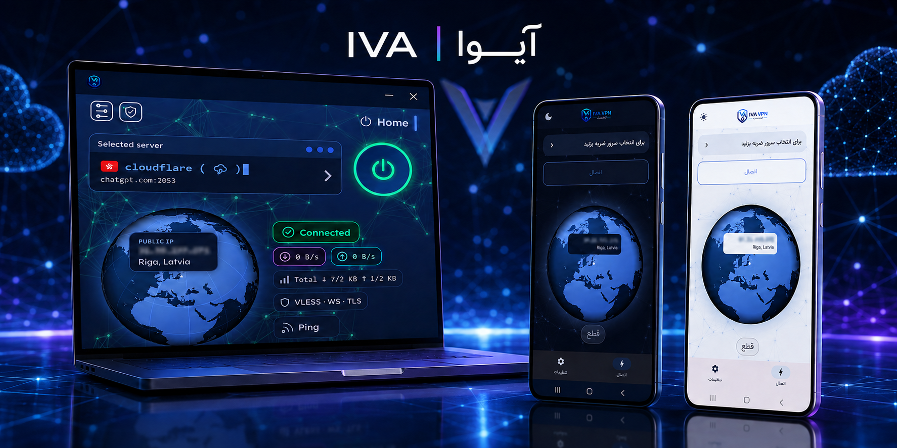
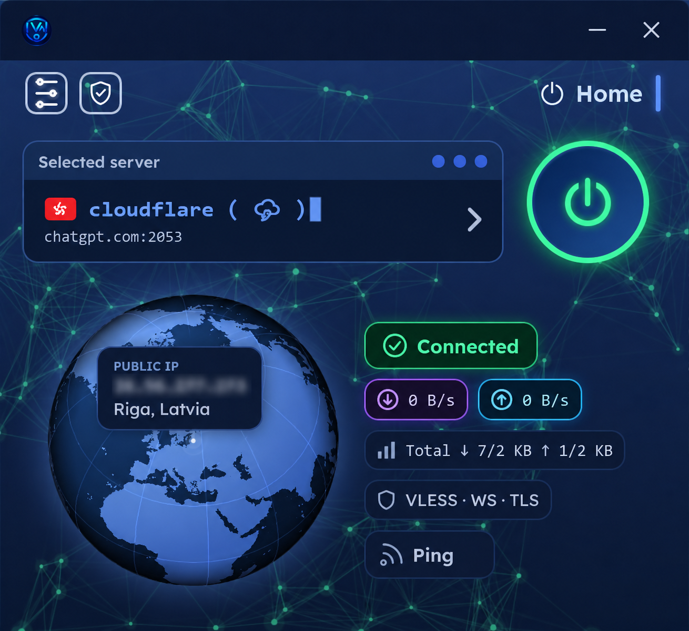
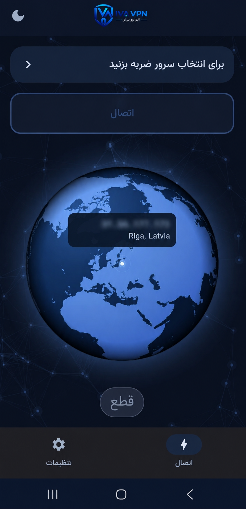
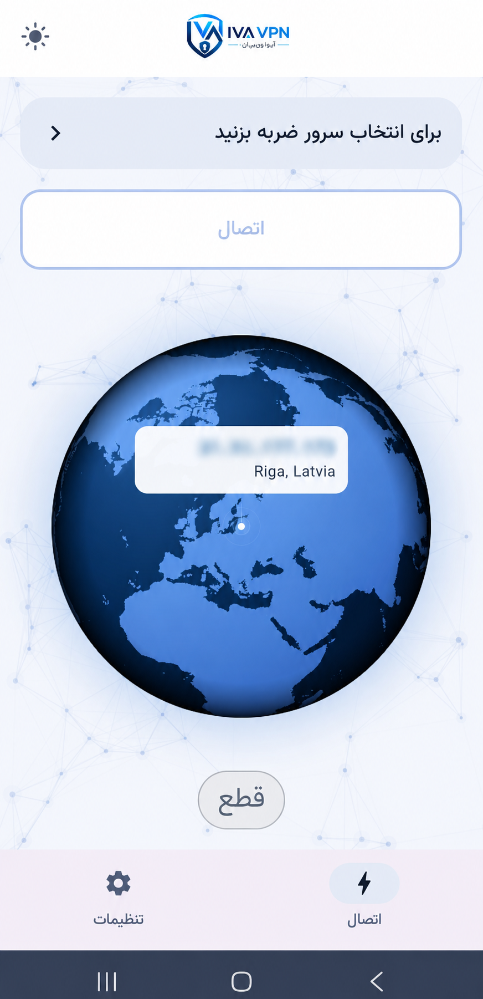

نسخهٔ پایدار در دسترس است
IVA Panelآیوا پنل
پنل حرفهای مولتیلوکیشن بر بستر Cloudflare Workers؛ مدیریت سریع، یکپارچه و هوشمند با اپلیکیشنهای اختصاصی Windows و Android.
4.4.73IVA Worker
10.7.59Panel
1.4.9Installer
FA · EN · RUمستندات
یک کنترلسنتر یکپارچه
زیرساخت چند لوکیشن، بدون پیچیدگی اضافه
IVA Panel برای مدیریت کاربران، مسیرها، تنظیمات و لوکیشنهای مختلف در یک داشبورد واکنشگرا طراحی شده است. خود پنل روی Cloudflare Workers اجرا میشود و برای اجرای پنل به VPS جداگانه نیاز ندارد.
این پروژه متنباز نیست؛ این ریپو مرکز رسمی مستندات، دانلود و انتشار نسخههاست.
قابلیتهای کلیدی v3
ابزارهای حرفهای برای مدیریت، پایداری و امنیت
Multi-Location
مدیریت چند لوکیشن، مسیر و زیرساخت از یک پنل واحد.
v1 · v2 · v3اتصال در اینترنت ملی
مسیر Relay جایگزین برای شرایط اینترانت و اختلال اینترنت بینالملل.
v3Arvan CDN Relay
بهینهسازی مسیر و تأخیر در شرایط شبکه و تنظیمات مناسب.
v3Google Apps Script
مسیر Relay مبتنی بر Google Apps Script در نسخهٔ سوم.
v3Full Backup & Restore
پشتیبانگیری کامل، بازیابی تنظیمات و مهاجرت کنترلشده.
v3امنیت حساب
TOTP، کد بازیابی، محدودیت ورود و مدیریت نشستها.
v3Routing & DNS
GeoIP، GeoSite، DoH، DNS محلی و قوانین مسیریابی سفارشی.
v1 · v2 · v3کلاینتهای گسترده
Mihomo، sing-box، Loon، Surge، Quantumult X و Base64.
v1 · v2 · v3تکامل محصول
سه نسل، یک مسیر رو به جلو
v1
اشتراک خودکار، کلاینتهای اصلی، Load Balancing، Health Check، DNS و ابزارهای پایه.
v2
داشبورد RTL، حالت پیشرفته، زنجیرههای پروکسی، امنیت TLS، مدیریت Telegram و ویرایشگر JSON.
v3
کاربران و سهمیهها، TOTP، D1، API مدیریت متمرکز، Relayها، Backup/Restore و نصب یککلیکی.
اپلیکیشنهای رسمی
یک تجربهٔ یکپارچه روی Windows و Android

▦
Windows x64
نسخهٔ اختصاصی برای Windows 64-bit؛ نسخهٔ ۳۲ بیتی ارائه نمیشود.
IVA-VPN-1.0.1-Setup.exeA
Android 10+
نسخهٔ Universal برای معماریهای رایج و دستگاههای Android 10 به بالا.
app-universal-release.apk


راهاندازی ساده و امن
از حساب Cloudflare تا پنل فعال در چند مرحله
نصب از وبسایت یا ربات رسمی انجام میشود. از API Token محدود استفاده کنید و هرگز Global API Key، رمز یا فایل Backup را در فضای عمومی نفرستید.
- 1
حساب را تأیید کنید
یک حساب Cloudflare با ایمیلی که به آن دسترسی دارید بسازید.
- 2
توکن محدود بسازید
فقط حداقل دسترسی لازم را به API Token بدهید.
- 3
پنل را ایجاد کنید
توکن را فقط در وبسایت یا ربات رسمی وارد کنید.
- 4
دسترسی را امن کنید
آدرس و رمز را ذخیره و توکن نصب را لغو یا تعویض کنید.
IVA Network Intelligence
دید زنده از وضعیت شبکه و سرویسها
رادار IVA تستهای قابل مشاهده، تأخیر، ترافیک و اختلال سرویسها را نمایش میدهد تا قبل از عیبیابی، تصویر روشنتری از وضعیت شبکه داشته باشید.
- وضعیت لحظهای سرویسها
- تست مستقیم از ایران و جهان
- بررسی تأخیر و اختلال شبکه
راهنمای داخلی و سهزبانه
قبل از پشتیبانی، پاسخ را در FAQ پیدا کنید
پرسشهای نصب، امنیت، Multi-Location، Backup، اپلیکیشنها، Relay، Requestها و محدودیتها داخل همین پروژه مستند شدهاند.
مطالعهٔ FAQ کاملمسیرهای رسمی IVA Works